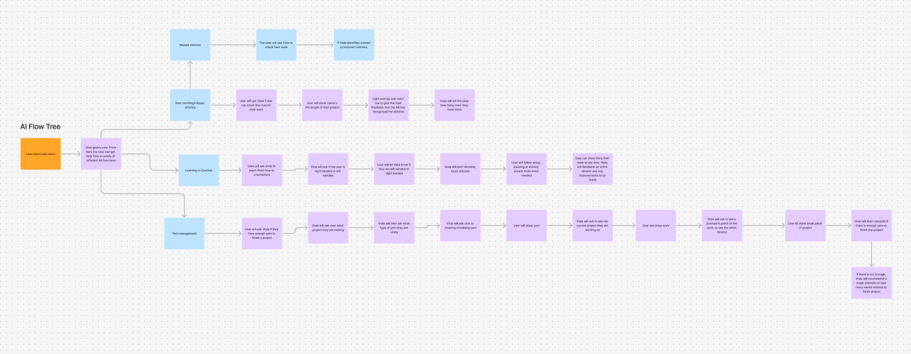

01
Cosy Crafter — AI Crafting Companion
Product Designer / Developer · Personal project, 2025

Problem
Learning crochet and knitting without real-time support is difficult. Beginners commonly struggle to interpret patterns and correct mistakes however existing apps offer static tutorials but no responsive guidance.
Process
- Mapped AI interaction pathways using a flow tree in Figma
- Created scenario storyboards to define user journeys
- Designed feature set and interface concepts in Figma
- Built a working prototype in Unity with an integrated OpenAI agent
Design focus
Structuring conversational AI interactions so guidance feels natural and contextually useful. Designing intuitive flows between learning mode and active making.
What I explored
How AI companions can support hands-on creative tasks in real time, and what interaction patterns make that feel genuinely helpful rather than interruptive.
Outcome
Working Unity prototype with integrated OpenAI agent. Figma artefacts including flow tree, scenario storyboards, and interface concepts. Exploration of conversational AI in creative learning tools.